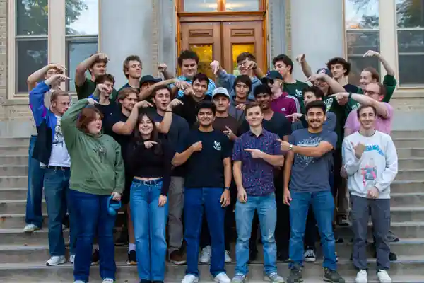
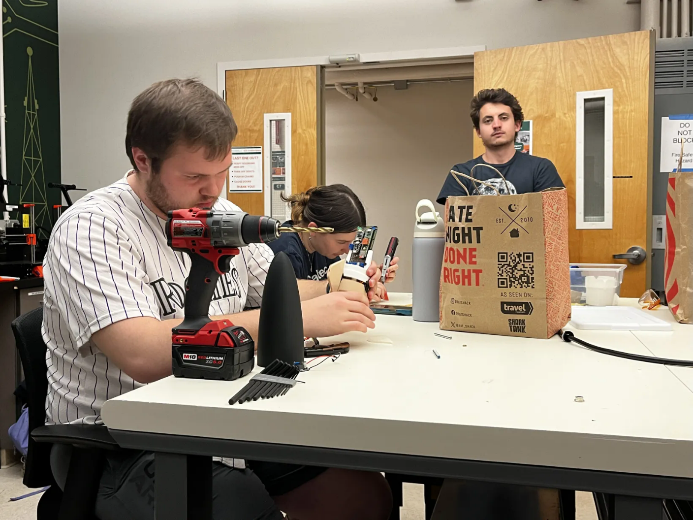
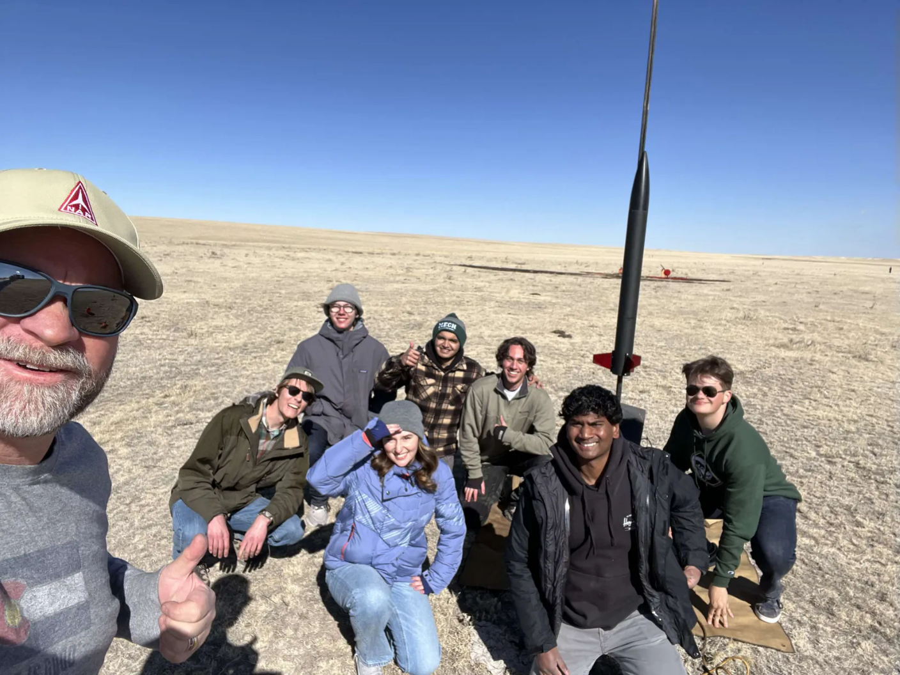

Leadership / Aerospace programs / 2024–Present
Ram Rocketry
President / IREC Chief Engineer & Project Coordinator
Ram Rocketry is where I learned that engineering leadership is mostly about creating enough structure for other people to do good technical work. I run weekly operations for the club while helping coordinate CSU's current IREC program across requirements, schedule, subsystem interfaces, testing, documentation, and external relationships.

- Organization
- 30+ members
- Role
- President
- IREC target
- 10,000 ft COTS
- Competition
- IREC 2027
01 / Organization
President
Building a club that can keep running without one person holding everything together.
As President, I coordinate a 30+ member organization with multiple technical projects running at the same time. The visible part is the weekly meeting. The larger job is setting project expectations, keeping budgets and deadlines visible, recruiting people into useful roles, and making sure each technical lead knows what they own.
I have been moving Ram Rocketry away from a flat club structure toward a program structure: the President sets direction, business and communications work through the Vice President, and technical programs are managed through project managers and chief engineers. That separation matters as the club grows. Sponsor outreach, social media, procurement, test planning, and vehicle design cannot all compete for the same person's attention.
I also handle external relationships. That has included sponsor and technical conversations with aerospace companies such as Lockheed Martin and Ursa Major, university faculty and staff, outreach events, and recruiting. Internally, I use project one-pagers, recurring officer task lists, shared calendars, and documented meeting agendas so new members can understand where they fit without needing years of club history explained to them.
Direction
President
Operations
Vice President
Business / Fundraising / Media
Technical programs
Project Management
Schedule / Resources / Reviews
Chief EngineersProgram ownership
Subsystem LeadsDesign / Analysis
Test & ManufacturingBuild / Verify

02 / IREC
Program leadership
Program management with engineering consequences.
Title clarification.
My formal role on the 2026–27 senior design team is Project Coordinator. Within Ram Rocketry, I also use Chief Engineer for the broader IREC program role. The work overlaps: I connect schedule and documentation to technical decisions, keep subsystem interfaces visible, and help move the vehicle through design reviews and testing.
Ram Rocketry is preparing for IREC 2027 in the 10,000 ft COTS category. The program includes a composite airframe, recovery, avionics, flight dynamics, airbrakes, payload, propulsion integration, manufacturing, and testing. My job is not to become the subsystem expert for all of those areas. It is to make sure the experts are working against the same requirements and that an interface problem is found before it becomes a launch-day problem.
I maintain the program-level view through the master schedule, requirement tracking, design-review structure, shared project records, and recurring status checks. We are using SRR/PDR/CDR-style reviews, then moving toward test and flight readiness reviews. I also coordinate with faculty, sponsors, mentors, procurement, and the broader Ram Rocketry organization so the senior-design team is not operating in isolation.
A big part of the current plan is forcing validation earlier. We are using subscale vehicles to exercise manufacturing, avionics, recovery, flight simulation, and airbrake integration before committing the full-scale vehicle to competition hardware.
Requirements
System-level requirements, mass and stability constraints, subsystem interfaces, and a common definition of success.
Schedule
Master Gantt, internal deadlines ahead of competition dates, worklogs, procurement timing, and review gates.
Reviews
SRR, PDR, CDR, test readiness, and flight readiness as places to expose unresolved engineering, not presentation exercises.
Integration
Airframe, recovery, avionics, airbrakes, payload, dynamics, and manufacturing treated as one vehicle rather than separate projects.

03 / Lessons
Changing the process
Some of the most useful leadership work started with writing down what I was doing badly.
Earlier in my time leading the club, I was too comfortable leaving decisions open, assigning tasks late, and assuming people understood the standard I had in my head. I also spent too much time on external outreach while internal operations needed more attention. None of that gets fixed by asking a team to “communicate better.” It needs a different operating process.
My approach now is more explicit: define prerequisites before work starts, put an owner and deadline on decisions, show people what successful output looks like, create review time before the real deadline, and document the result so the next person does not restart from zero.
No short-notice work by default.
If a task matters, it should enter the schedule early enough for someone to do it well and for another person to review it.
Turn “maybe” into a decision.
Open questions need a decision owner, the evidence required to close them, and a date when the team will stop carrying the ambiguity.
Use shared standards.
The team needs common metrics for success. My private standard is useless if nobody else knows what the finished work is supposed to do.
Documentation is engineering work.
Requirements, checklists, test plans, meeting decisions, and failure notes are part of building a reliable system, not administrative cleanup afterward.
04 / Current focus
2026–27
What I am trying to make repeatable.
People
Clear roles, onboarding, underclassman-to-senior knowledge transfer, and accountability without making the club dependent on one officer.
Program controls
A single schedule, requirements trail, review cadence, expense tracking, and decisions that can be reconstructed later.
Technical integration
Interfaces across flight dynamics, structures, avionics, recovery, airbrakes, payload, manufacturing, and testing.
External relationships
Faculty, university resources, competition organizers, sponsors, mentors, and recruiting treated as part of the engineering program.
Continuity
Leave behind files, processes, and trained members that let the next team start farther ahead than we did.